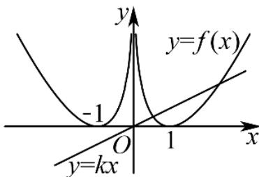
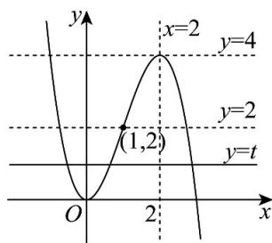

《深圳中学2024级高二数学周测（9）》参考答案1-8 BDADBCDB 9. ABC 10. AC 11. BCD 12. e 13. \(\frac{23}{9}\) 14. \(\frac{12}{625}\) , 6
1. B
详解从 \(^{10}\) 个零件中随机抽取 \(^{3}\) 个，总的抽取方法数为组合数 \(C_{10}^{3}\) ，要求恰好 \(^{1}\) 件不合格，即从4个不合格零件中抽1个，从6个合格零件中抽2个，符合条件的方法数为 \(C_{4}^{1}C_{6}^{2}\) ，故恰好1件不合格的概率为 \(\frac{C_{4}^{1}C_{6}^{2}}{C_{10}^{3}}\) 。故选：B.
2. D
详解由题意可得 \(a + 2a + 3a = 1\) ，解得 \(a = \frac{1}{6}\) ，所以 \(P(X \geq 2) = P(X = 2) + P(X = 3) = 2a + 3a = \frac{5}{6}\) . 故选：D.
3. A
详解由题可得 \(f'(x)=3x^{2}-6x=3x(x-2)\) ，令 \(f'(x)=0\) ，解得：x=0 或 x=2， 当 x<0 或 x>2 时， \(f'(x)>0\) ，当 0<x<2 时， \(f'(x)<0\) ，所以 \(f(x)\) 的单调递增区间为： \((-∞,0)\) 和 \((2,+∞)\) ，单调递减区间为 \((0,2)\) ，所以 \(f(x)\) 的极大值为 \(f(0)=0\) ，极小值为 \(f(2)=-4\) ，则函数 \(f(x)=x^{3}-3x^{2}\) 的所有极值的和为 -4．故选：A.
4. D
详解设甲获胜为事件A，甲第一局获胜为事件B，则
\[P (A) = \frac {2}{3} \times \frac {2}{3} + \frac {2}{3} \times \frac {1}{3} \times \frac {2}{3} + \frac {1}{3} \times \frac {2}{3} \times \frac {2}{3} = \frac {2 0}{2 7}, P (A B) = \frac {2}{3} \times \frac {2}{3} + \frac {2}{3} \times \frac {1}{3} \times \frac {2}{3} = \frac {1 6}{2 7},\]
所以在甲获胜的条件下，甲第一局获胜的概率是 \(P(B|A) = \frac{P(AB)}{P(A)} = \frac{\frac{16}{27}}{\frac{20}{27}} = \frac{4}{5}\) . 故选：D.
5. B
详解方法一：依题意，当 \(X > 0\) 时， \(X\) 的可能取值为1,3,5，所以
\[P (X > 0) = P (X = 5) + P (X = 3) + P (X = 1) = \left(\frac {1}{3}\right) ^ {5} + C _ {5} ^ {1} \left(\frac {1}{3}\right) ^ {4} \left(\frac {2}{3}\right) + C _ {5} ^ {2} \left(\frac {1}{3}\right) ^ {3} \left(\frac {2}{3}\right) ^ {2} = \frac {1 7}{8 1}.\]
方法二：设5次移动中向右移动的次数为 \(Y\) ，则 \(Y\sim B\left(5,\frac{1}{3}\right)\) ，则
\[P (X > 0) = P (Y = 5) + P (Y = 4) + P (Y = 3) = \dots)\]
6. C
详解由题意可得： \(0 < a < 1\) 。因为若 \(a > 1\) ，当 \(x \to 0+\) 时， \(\log_{a} x \to -\infty\) ， \(8^{x} > 0\) ，
则 \(8^{x} \leq \frac{3}{2} + \log_{a} x\) 不能恒成立. 当 \(0 < a < 1\) 时, \(8^{x}\) 单调递增, \(\log_{a} x\) 单调递减, 要使
\(8^{x} \leq \frac{3}{2} + \log_{a} x\) 在 \(x \in \left(0, \frac{1}{3}\right]\) 上恒成立，只需要 \(8^{\frac{1}{3}} \leq \frac{3}{2} + \log_{a} \frac{1}{3} \Rightarrow \log_{a} \frac{1}{3} \geq \frac{1}{2} = \log_{a} a^{\frac{1}{2}} \Rightarrow a^{\frac{1}{2}} \geq \frac{1}{3}\)
\(\Rightarrow a \geq \frac{1}{9}\) ，所以实数 \(a\) 的取值范围为： \(\frac{1}{9} \leq a < 1\) 。故选：C
7. D
详解方法一：设 \(Y\) 为正面向上的次数，则 \(Y \sim B\left(8, \frac{1}{2}\right)\) ，总得分
\(X=2Y+(-1)\times(8-Y)=3Y-8\) ，由于 \(E(Y)=8\times\frac{1}{2}=4\) ， \(D(Y)=8\times\frac{1}{2}\times\left(1-\frac{1}{2}\right)=2\) ，所以
\(E(X)=E(3Y-8)=3E(Y)-8=4\) , \(D(X)=D(3Y-8)=9D(Y)=9\times2=18\) , 故选: D.
方法二：记第i次抛掷硬币的得分为随机变量 \(X_{i}(i=1,2,\cdots,8)\) ，故 \(X_{i}\) 的可能取值为2,-1，且
\(P(X_{i} = 2) = P(X_{i} = -1) = \frac{1}{2}\) , 所以 \(E(X_{i}) = 2 \times \frac{1}{2} + (-1) \times \frac{1}{2} = \frac{1}{2}\) ,
\[E \left(X _ {i} ^ {2}\right) = 2 ^ {2} \times \frac {1}{2} + (- 1) ^ {2} \times \frac {1}{2} = \frac {5}{2}, \text {则} D \left(X _ {i}\right) = E \left(X _ {i} ^ {2}\right) - E ^ {2} \left(X _ {i}\right) = \frac {9}{4}.\]
由题意可知： \(X=X_{1}+X_{2}+\cdots X_{8}\) ，则 \(E(X)=E(X_{1})+E(X_{2})+\cdots E(X_{8})=8\times\frac{1}{2}=4\)
因为 \(X_{1},X_{2},\cdots,X_{8}\) 之间相互独立，则 \(D(X)=D(X_{1})+D(X_{2})+\cdots D(X_{8})=8\times\frac{9}{4}=18\)
8. B
详解由 \(\frac{f'(x)}{2x - 3} >0\) 得，当 \(x > \frac{3}{2}\) 时， \(f'(x) > 0\) ，当 \(x < \frac{3}{2}\) 时， \(f'(x) < 0\) ，所以 \(f(x)\)
在 \(\left(-\infty,\frac{3}{2}\right)\) 单调递减，在 \(\left(\frac{3}{2},+\infty\right)\) 单调递增．又 \(f\left(x+\frac{3}{2}\right)\) 是偶函数，所以直线 \(x=\frac{3}{2}\) 为 \(f(x)\) 的 对称轴，故 \(f(0.2^{3})=f(3-0.2^{3})=f(2.992)\) . 因为 \(\frac{3}{2}=\log_{2}2\sqrt{2}<\log_{2}3<2<2.992\) ，且 \(f(x)\) 在 \(\left(\frac{3}{2},+\infty\right)\) 单调递增，所以 \(f(\log_{2}3)<f(2)<f(2.992)\) ，故b<c<a．故选：B.
9. ABC
详解对于选项A，有放回抽取时，显然 \(P(A) = P(B) = \frac{1}{3}\) ，故A正确．对于选项
B，不放回抽取时， \(P(A)=\frac{1}{3}\) ， \(P(B)=\frac{2}{3}\times\frac{1}{2}=\frac{1}{3}\) ，故 B 正确。对于选项 C，有放回抽取时，
因为事件 \(A, B\) 相互独立， \(P(B) = P(B|A)\) ，故C正确。对于选项D，不放回抽取时，若甲中奖，则乙一定不中奖，所以 \(P(B|A) = 0 \neq P(B)\) ，故D错误。

10. AC
详解对于选项A，由题设 \(f(1) = (1 - 1)\ln 1 = 0\) ，A正确.
对于选项B，因为 \(f(x)\) 为偶函数，若 \(x < 0\) ，则 \(-x > 0\) ，故
\(f(x)=f(-x)=(-x-1)\ln(-x)=-(x+1)\ln(-x)\) ，B错误.
对于选项C，当 \(x < 0\) 时， \(f(x) = -(x + 1)\ln (-x)\) ，则 \(f'(x) = -\ln (-x) - \frac{1}{x} - 1\) ，令
\(g(x)=f'(x)\Rightarrow g'(x)=\frac{1}{x^{2}}-\frac{1}{x}=\frac{1-x}{x^{2}}>0\) ，即 \(g(x)=f'(x)\) 在 \((-∞,0)\) 上单调递增，又 \(f'(-1)=-\ln1+1-1=0\) ，故当 \(x\in(-∞,-1)\) 时 \(f'(x)<0\) ， \(f(x)\) 在 \((-∞,-1)\) 上单调递减；当 \(x\in(-1,0)\) 时 \(f'(x)>0\) ， \(f(x)\) 在 \((-1,0)\) 上单调递增，故x=-1是 \(f(x)\) 的极小值点，C正确. 对于D选项，由C分析， \(x\to-\infty\) 或 \(x\to0^{-}\) 时 \(f(x)\to+\infty\) ，且 \(f(-1)=0\) ，所以在 \((-∞,-1)\)
\((-1,0)\) 上 \(f(x)\in (0, + \infty)\) ，又 \(f(x)\) 为偶函数，故在 \((0,1)\) 、 \((1, + \infty)\) 上 \(f(x)\in (0, + \infty)\) ，由图像可
知，直线 \(y = kx\) 与 \(y = f(x)\) 的图象恒有2个交点，D错误.故选：AC
11. BCD
详解由题可得方程 \(t = x^{2}(3 - x)\) （ \(t \in R\) ）有三个不同的根 a、b、c，其中 a < b < c，则直线 y = t 与函数 \(g(x) = x^{2}(3 - x)\) 图像有 三个不同的交点， \(g'(x)=6x-3x^{2}=3x(2-x)\) ，则 \(x\in(-\infty,0)\cup(2,+\infty)\)

时 \(g^{\prime}(x) < 0\) ， \(x\in (0,2)\) 时 \(g^{\prime}(x) > 0\) ，所以函数 \(g(x)\) 在 \((0,2)\) 上单调递增，在 \((- \infty ,0),(2, + \infty)\) 上单调递减；且 \(g(0) = 0,g(2) = 4,x\to -\infty\) 时 \(g(x)\rightarrow +\infty\) ， \(x\to +\infty\) 时 \(g(x)\rightarrow -\infty\) ，作出函数 \(g(x)\) 图像如图所示.
对于选项 A，由图可知 \(t^{\prime}\) 的取值范围为 \((0,4)\) ，故 A 错误；
\[t = x ^ {2} (3 - x)\]
\[x ^ {3} - 3 x ^ {2} + t = 0\]
\[a \text {、} b \text {、} c\]
故 \(x^{3} - 3x^{2} + t = (x - a)(x - b)(x - c) = x^{3} - (a + b + c)x^{2} + (ab + ac + bc)x - abc = 0\) ，所以
\(a+b+c=3,ab+ac+bc=0,abc=-t\) ．因为 \(ab+bc+ac=0\) ，所以
\(\frac{1}{a} + \frac{1}{b} + \frac{1}{c} = \frac{ab + bc + ac}{abc} = 0\) ，故B正确；因为 \(a + b + c = 3\) ，则 \(a + b = 3 - c\) ，由图可知 \(2 < c < 3\) ，所以 \(a + b = 3 - c \in (0,1)\) ，故C正确；若 \(a, b, c\) 成等差数列，则 \(a + b + c = 3b = 3\) ，解得 \(b = 1\) ，故 \(f(b) = f(1) = 2 - t = 0\) ，则 \(t = 2\) 当 \(t = 2\) 时，\(x^{3} - 3x^{2} + 2 = (x - 1)(x^{2} - 2x - 2) = 0\) ，故 \(a\) 和 \(c\) 是方程 \(x^{2} - 2x - 2 = 0\) 的两根，故
\(a+c=2=2b,\quad a,\quad b,\quad c\) 成等差数列，所以 D 正确；故选：BCD.
注：针对于 D 选项，对于任意的三次函数都有类似结论：
已知 \(f(x)=ax^{3}+bx^{2}+cx+d(a\neq0)\) ，方程 \(f(x)=t\) 有三个不同的实根
\(x_{1}, x_{2}, x_{3} (x_{1} < x_{2} < x_{3})\) . 若 \(x_{1}, x_{2}, x_{3}\) 构成等差数列，则必有 \(x_{2} = -\frac{b}{3a}, t = f(x_{2}) = f\left(-\frac{b}{3a}\right)\) .
12. e
详解当 \(a \leq 0\) 时， \(f(a) = e^{a} = e\) ，解得 a = 1，不符合题意；
当 \(x > 0\) 时， \(f(x) = x \ln x\) ，则 \(f'(x) = \ln x + 1\) ，令 \(f'(x) < 0 \Rightarrow 0 < x < \frac{1}{\mathrm{e}}, f'(x) > 0 \Rightarrow x > \frac{1}{\mathrm{e}}\)
所以 \(f(x)\) 在 \((0, \frac{1}{\mathrm{e}})\) 上单调递减，在 \((\frac{1}{\mathrm{e}}, +\infty)\) 上单调递增，且 \(f(\frac{1}{\mathrm{e}}) = -\frac{1}{\mathrm{e}} < 0\) ，当 \(x \to 0\) 时，
\(\ln x \to -\infty\) ，则 \(f(x) \to 0\) ，当 \(x \to +\infty\) 时， \(f(x) \to +\infty\) ，且 \(0 < x < 1\) 时， \(f(x) < 0\) ； \(x > 1\) 时，
\(f(x) > 0\) ；所以 \(f(x)\) 在 \((0, +\infty)\) 上有且仅有唯一的零点。所以当时， \(f(a) = a \ln a = e\) ，则 \(a > 1\) ，解得 \(a = e\) 。综上， \(a = e\) 。故答案为： \(e\)
13. \(\frac{23}{9}\)
详解由题设 \(X\) 可取0,2,4，又 \(P(X = 0) = \frac{2}{6} \times \frac{1}{6} = \frac{1}{18}\) ，
\[P (X = 2) = \frac {2}{6} \times \frac {5}{6} + \frac {4}{6} \times \frac {3}{6} = \frac {2 2}{3 6} = \frac {1 1}{1 8}, P (X = 4) = \frac {4}{6} \times \frac {3}{6} = \frac {6}{1 8} = \frac {1}{3},\]
所以 \(E(X)=0\times\frac{1}{18}+2\times\frac{11}{18}+4\times\frac{1}{3}=\frac{23}{9}\) .
思考：如果操作 \(n\) 次，记袋中的白球个数为 \(X_{n}\) ，则 \(X_{n}\) 的数学期望是多少呢？
14. \(\frac{12}{625}\) 6
详解当 \(p = \frac{2}{5}, n = 2\) 时，甲乙比赛四局，则甲要赢3局或4局才能获胜，
计算 \(P_{4} = \mathrm{C}_{4}^{3}\left(\frac{2}{5}\right)^{3}\times \frac{3}{5} +\mathrm{C}_{4}^{4}\left(\frac{2}{5}\right)^{4} = \frac{112}{625},n = 1\) 时，甲乙比赛二局，则甲要赢2局，计算
\[P _ {2} = \mathrm{C} _ {2} ^ {2} \left(\frac {2}{5}\right) ^ {2} = \frac {4}{2 5} = \frac {1 0 0}{6 2 5}, \text {所以} P _ {4} - P _ {2} = \frac {1 1 2}{6 2 5} - \frac {1 0 0}{6 2 5} = \frac {1 2}{6 2 5};\]
在 \(2n + 2\) 局比赛中甲获胜，则甲胜的局数至少为 \(n + 2\) 局. 要想实现该结果，先考虑前 \(2n\)
局的比赛结果：可能是甲胜了恰好 \(n\) 局，可能是甲胜了恰好 \(n + 1\) 局，可能是甲胜了至少
\(n+2\) 局· 分别考虑这三种情况：
1) 前 \(2n\) 局，甲恰好胜 \(n\) 局，后 2 场甲 2 连胜，概率为
\[p _ {1} = \mathrm{C} _ {2 n} ^ {n} p ^ {n} \times (1 - p) ^ {n} \times p ^ {2} = \mathrm{C} _ {2 n} ^ {n} p ^ {n + 2} \times (1 - p) ^ {n};\]
2)前 2n 局，甲恰好胜 \(n+1\) 局，后 2 场甲 1 胜 1 负或者 2 胜，概率为
\[p _ {2} = \mathrm{C} _ {2 n} ^ {n + 1} p ^ {n + 1} \times (1 - p) ^ {n - 1} \times [ 1 - (1 - p) ^ {2} ] = \mathrm{C} _ {2 n} ^ {n + 1} p ^ {n + 2} \times (1 - p) ^ {n - 1} (2 - p),\]
3)前 \(2n\) 局，甲至少胜 \(n + 2\) 局，后2场甲无论胜负都可以，概率为
\[p _ {3} = \sum_ {k = n + 2} ^ {2 n} \mathrm{C} _ {2 n} ^ {k} p ^ {k} \times (1 - p) ^ {2 n - k} \times 1 ^ {2} = \sum_ {k = n + 2} ^ {2 n} \mathrm{C} _ {2 n} ^ {k} p ^ {k} \times (1 - p) ^ {2 n - k};\]
所以 \(P_{2n + 2} = p_1 + p_2 + p_3\) ，而 \(P_{2n} = \sum_{k = n + 1}^{2n}\mathrm{C}_{2n}^{k}p^{k}\times (1 - p)^{2n - k} = p_{3} + \mathrm{C}_{2n}^{n + 1}p^{n + 1}\times (1 - p)^{n - 1}\)
\[\text {所以} P _ {2 n + 2} - P _ {2 n} = p _ {1} + p _ {2} - \mathrm{C} _ {2 n} ^ {n + 1} p ^ {n + 1} \times (1 - p) ^ {n - 1}\]
\[= \mathrm{C} _ {2 n} ^ {n} p ^ {n + 2} \times (1 - p) ^ {n} + \mathrm{C} _ {2 n} ^ {n + 1} p ^ {n + 2} \times (1 - p) ^ {n - 1} (2 - p) - \mathrm{C} _ {2 n} ^ {n + 1} p ^ {n + 1} \times (1 - p) ^ {n - 1}\]
\[= \left[ \mathrm{C} _ {2 n} ^ {n} p (1 - p) + \mathrm{C} _ {2 n} ^ {n + 1} p (2 - p) - \mathrm{C} _ {2 n} ^ {n + 1} \right] p ^ {n + 1} \times (1 - p) ^ {n - 1}\]
\[= \left[ C _ {2 n} ^ {n} p (1 - p) - C _ {2 n} ^ {n + 1} (1 - p) ^ {2} \right] p ^ {n + 1} \times (1 - p) ^ {n - 1} = \left[ C _ {2 n} ^ {n} p - C _ {2 n} ^ {n + 1} (1 - p) \right] p ^ {n + 1} \times (1 - p) ^ {n},\]
令 \(P_{2n + 2} > P_{2n}\) ，则 \(\mathrm{C}_{2n}^{n}p - \mathrm{C}_{2n}^{n + 1}(1 - p) > 0\) ，即
\[\frac {(2 n) !}{n ! n !} p > \frac {(2 n) !}{(n + 1) ! (n - 1) !} (1 - p) \Leftrightarrow n (1 - 2 p) < p.\]
因为 \(p=\frac{5}{12}\) ，所以 \(n<\frac{p}{1-2p}=\frac{5}{2}\) ，即 \(n\leq2\) ，所以 \(P_{2}<P_{4}<P_{6}\) .
同理可知：令 \(P_{2n+2} < P_{2n}\) ，则 \(n \geq 3\) ，故 \(P_{6} > P_{8} > P_{10} > \cdots > P_{2n} > \cdots\)
所以当2n=6时， \(P_{6}\) 最大. 故答案为： \(\frac{12}{625}\) ，6.
15详解（1）不妨设事件 A = “模型甲回答正确”，事件 B = “模型乙回答正确”，由题意可得， \(P(A) = p = 0.85\) ， \(P(B) = 0.75\) ，由于 A 与 B 相互独立，所以在第一次提问中两个模型答案不同的概率为
\[P (A \bar {B} \cup \bar {A} B) = P (A \bar {B}) + P (\bar {A} B) = P (A) P (\bar {B}) + P (\bar {A}) P (B) = 0. 8 5 \times 0. 2 5 + 0. 1 5 \times 0. 7 5 = 0. 3 2 5\]
（2）由（1）可知，在第一次提问中两个模型答案不同的概率为：
\[P (A \bar {B} \cup \bar {A} B) = P (A \bar {B}) + P (\bar {A} B) = P (A) P (\bar {B}) + P (\bar {A}) P (B) = 0. 2 5 p + 0. 7 5 (1 - p) = 0. 7 5 - 0. 5 p\]
系统第二次输出正确答案的概率为： \(P(A\overline{B}\cup\overline{A}B)P(A)=(0.75-0.5p)\cdot p=-0.5p^{2}+0.75p\)
设系统最终输出正确答案的概率为 \(P'\) ，则 \(P' = 0.75p + (-0.5p^2 + 0.75p) = -0.5p^2 + 1.5p\)
于是 \(P' \geq 0.88\) ，解得 \(0.8 \leq p \leq 2.2\) ，又由 \(p \in (0,1)\) ，于是 \(0.8 \leq p < 1\) ，则 \(p\) 的最小值为 0.8。
16. (1) \(\left[\frac{1}{\mathrm{e}}, +\infty\right)\) (2)证明见解析 (3) \(b = -\ln a\) （也可写为 \(a = \mathrm{e}^{-b}\) ）
详解（1）由于 \(a\mathrm{e}^{x}\geq \ln x + 1\) ，则 \(a\geq \frac{\ln x + 1}{\mathrm{e}^{x}}\) ，设 \(F(x) = \frac{\ln x + 1}{\mathrm{e}^{x}}\) ，则 \(F'(x) = \frac{\frac{1}{x} - \ln x - 1}{\mathrm{e}^{x}}\) ，
\(F'(1)=0\) ，且 \(y=\frac{1}{x}-\ln x-1\) 在 \((0,+\infty)\) 上单调递减。令 \(F'(x)>0\) 得 0<x<1，令 \(F'(x)<0\) 得 x>1，所以 \(F(x)\) 在 \((0,1)\) 单调递增， \((1,+\infty)\) 单调递减，所以 \(F(x)_{\max}=F(1)\) ，则 \(a\geq F(1)=\frac{1}{e}\) 。（注：也可以利用切线放缩不等式： \(\ln x+1\leq x\) ， \(e^{x}\geq e x\) ，所以 \(\frac{\ln x+1}{e^{x}}\leq\frac{1}{e}\) ，当且仅当 x=1 时等号成立，故 \(\left(\frac{\ln x+1}{e^{x}}\right)_{min}=\frac{1}{e}\) ）
（2）当 \(a=e^{-1}\) 时， \(f(x)=e^{x-1}\) ，故 \(f'(x)=e^{x-1}\) ，则 \(f(x)=e^{x-1}\) 在 \((m,e^{m-1})\) 处的切线方程为 \(y=e^{m-1}x+(1-m)e^{m-1}\) ，
由 \(g'(x)=\frac{1}{x}\) 可知， \(g(x)=\ln x+b\) 在点 \((n,\ln n+b)\) 处的切线方程为 \(y=\frac{1}{n}x+\ln n+b-1\) ，
由题意得 \(\left\{\begin{aligned}e^{m-1}&=\frac{1}{n}\\ (1-m)e^{m-1}&=\ln n+b-1\end{aligned}\right.\) ，故 \(n=e^{1-m}\) ，所以 \((1-m)e^{m-1}=1-m+b-1\) 即 \((m-1)e^{m-1}-m+b=0\) ，令 \(h(m)=(m-1)e^{m-1}-m+b\) ，则 \(h'(m)=me^{m-1}-1\) ， \(h''(m)=(m+1)e^{m-1}\) ，所以当 m<-1 时， \(h''(m)<0\) ， \(h'(m)\) 单调递减；当 m>-1 时， \(h''(m)>0\) ， \(h'(m)\) 单调递增。又 \(h'(-1)=-e^{-2}-1<0\) ， \(h'(1)=0\) ，当 m<-1 时， \(h'(m)<0\) （或者 \(\lim_{m\to-\infty}h'(m)=-1\) ）所以当 m<1 时， \(h'(m)<0\) ， \(h(m)\) 单调递减；当 m>1 时， \(h'(m)>0\) ， \(h(m)\) 单调递减，因为 b<1，所以 \(h(1)=b-1<0\) ，而 \(\lim_{m\to-\infty}h(m)=+\infty\) ， \(\lim_{m\to+\infty}h(m)=+\infty\) ，故函数 h(m) 在 R 上有 2 个零点，所以当 b<1 时，总存在两条直线与曲线 \(y=f(x)\) 与 \(y=g(x)\) 都相切。
（3） \(f'(x)=ae^{x}\) ，则 \(f(x)=ae^{x}\) 在 \((s,ae^{s})\) 处的切线方程为 \(y=ae^{s}x+a(1-s)e^{s}\) ，
由 \(g'(x)=\frac{1}{x}\) 可知， \(g(x)=\ln x+b\) 在点 \((t,\ln t+b)\) 处的切线方程为 \(y=\frac{1}{t}x+\ln t+b-1\) ，
由题意可知 \(\left\{\begin{aligned}ae^{s}&=\frac{1}{t}\\ a(1-s)e^{s}&=\ln t+b-1,\end{aligned}\right.\) 由 \(ae^{s}=\frac{1}{t}\Rightarrow s=-\ln t-\ln a\) ，
代入 \(a(1-s)e^{s}=\ln t+b-1\) 得，则 \(\ln a=(t-1)\ln t+(b-1)t-1\) 。
因为曲线 \(y = f(x)\) 与 \(y = g(x)\) 有两条公切线 \(l_{1}, l_{2}\) ，且 \(l_{1}, l_{2}\) 的斜率之积为 1，故只需要满足方程 \(G(t) = (t - 1)\ln t + (b - 1)t - 1 = \ln a\) 有两个不等实根，且互为倒数.
设两根为 \(p, \frac{1}{p} (p \neq 1)\) ，由 \(G(p) = G\left(\frac{1}{p}\right)\) 得 \((p - 1)\ln p + (b - 1)p - 1 = \left(\frac{1}{p} - 1\right)\ln \frac{1}{p} + (b - 1)\frac{1}{p} - 1\)
化简得 \(\ln p = \frac{(1 - b)(1 + p)}{p - 1}\) ，故 \(\ln a = G(p) = (p - 1)\ln p + (b - 1)p - 1 = -b\)
所以 \(b = -\ln a\) ，（也可写为 \(a = \mathrm{e}^{-b}\) ）.